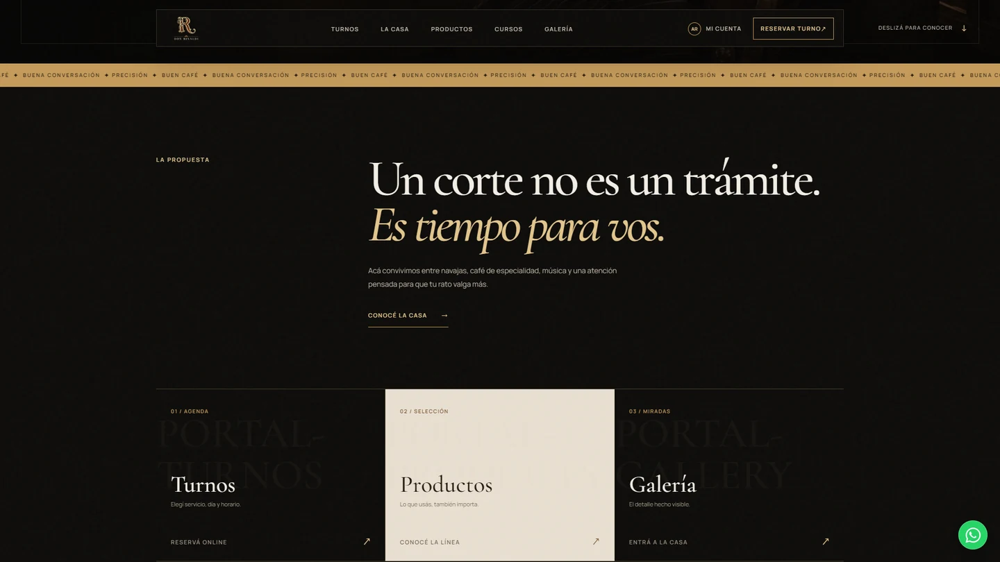

Separar el sitio de la gestión de datos
Next.js consume la API, que procesa las reservas y utiliza un adaptador de persistencia.
Proyecto web para cliente
Sitio web y aplicación de turnos para una barbería, con catálogo y administración.

El proyecto combinaba dos necesidades: presentar la identidad, los servicios y los productos de la barbería, y resolver la disponibilidad y reserva de turnos con herramientas de administración.
Diseñé y desarrollé la solución para el cliente, desde la presentación visual del sitio hasta los flujos de turnos y administración.
Next.js consume la API, que procesa las reservas y utiliza un adaptador de persistencia.
La disponibilidad se valida de nuevo al confirmar para detectar si otra reserva ocupó el turno.
Organicé los tipos y las reglas comunes en paquetes del monorepo para mantener coherencia entre el frontend y la API.
El desarrollo reúne la web pública y la aplicación de turnos. Finalmente no llegó a ponerse en servidor por un motivo externo al proyecto.
